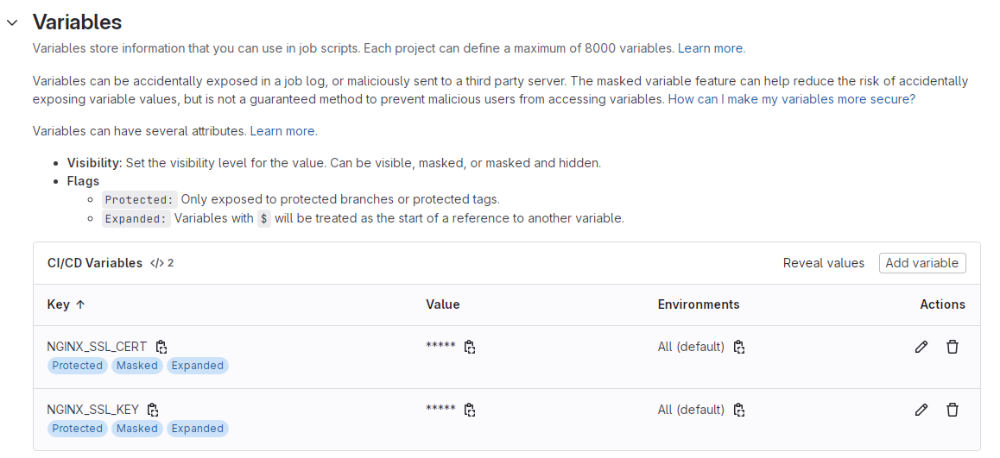

解放工程師的雙手，你需要好的 CI/CD ─ 搞定 gitlab-ci + 環境變數
上一篇搞定 gitlab-runner 的各種設定以後，現在馬上讓我們來建立一個簡單的 gitlab-ci 測試看看吧~
喔對了.gitlab-ci.yml，檔名前面記得加.，不要跟我一樣耍笨喔 😓。
# .gitlab-ci.yml
stages:
- deploy
deploy-job:
stage: deploy
script:
- echo "Hello, $GITLAB_USER_LOGIN!"
- pwd
- whoami
- echo "This job deploys from the $CI_COMMIT_BRANCH branch."
only:
- master
tags:
- test-runner
- stages: 定義這個 pipeline 有幾個不同階段，這個例子只有一個階段
deploy(意味著你在 Settings/CI/CD/Pipelines 就只會看到一個圈圈)。 - deploy-job: 定義了一個 job 名為
deploy-job，stage: deploy表示這個 job 對應到deploy階段。 - script: 這邊寫下你需要在機器上運行的指令。
- $GITLAB_USER_LOGIN, $CI_COMMIT_BRANCH: 此為 Predefined Variables，為 Gitlab 事先幫你定義好的一些變數，詳情可參考官方文件。
- pwd: 個人覺得顯示當前路徑 Debug 還蠻方便的，如果 pipeline 有什麼異常，可以直接進到機器的該目錄底下檢查，通常是
/home/gitlab-runner/builds/xxxxxxxx/0/your-project。 - only: 限制這個 job 在某些條件下進行，注意條件是 OR，例如：
only:
- master
- tags
這個 job 只會在 master 分支或是下 tag 的時候觸發，如果需要 AND 請轉用 rules:。
- tags: 此 tag 非彼 tag，這是指定要讓哪個 runner 跑的 tag，還記得嗎？我們上一篇文章在建立 runner 的時候有輸入 tag，這時候就派上用場了。注意跟
only:不同，這邊的邏輯是 AND。例如：
tags:
- test-runner
- production-runner
代表這個 job 只能在同時具有 test-runner + production-runner 這兩個標籤的 runner 上面跑 (每個 runner 可以設定多個 tag)，如果一個 job 找不到符合條件的 runner，你會在 pipeline 看到它永遠是 pending 的狀態。
有了上面這份 gitlab-ci 以後，趕快把你的 commit push 到 master 吧！不久後你就可以看到 pipeline 的成功訊息了。
接著後讓我們根據需求開始擴充這個 CI 吧~
搭配環境變數
如果是 React 專案的話，可能會有多個 .env 檔案，我們假設專案內有.env.development, .env.uat, .env.production，分別對應到三種不同的執行環境。
不知道怎麼擴充使用 env 的，可以參考我之前寫的這篇文章。
這時候，我們要做的就是讓 CI 可以依據不同的 branch，執行不同的 build 指令，例如在 uat 環境是 npm run build:uat，在 production 環境則是 npm run build。
一般來說如果你使用 Docker executor，可以這樣做：
# .gitlab-ci.yml
stages:
- build
build-for-uat:
stage: build
image: node:20
script:
- npm run build:uat
only:
- uat
tags:
- uat-runner
build-for-production:
stage: build
image: node:20
script:
- npm run build
only:
- master
tags:
- production-runner
需要注意的是要記得開兩台 runner，一台對應到 uat 環境，而另一台對應到 production 環境。
不過由於我在之前就已經把Dockerfile, docker-compose.yaml, nginx.conf都寫好了 (詳情可看這篇文章)，所以只需要 gitlab-ci 模擬手動部署的指令，因此我選擇使用 Shell executor，目標是要根據不同的 branch 來執行不同的docker compose up指令：
# .gitlab-ci.yml
stages:
- deploy
deploy-to-uat:
stage: deploy
script:
- sudo docker compose --env-file .env.uat up --build -d
only:
- uat
tags:
- uat-runner
deploy-to-production:
stage: deploy
script:
- sudo docker compose --env-file .env.production up --build -d
only:
- master
tags:
- production-runner
可以發現我透過分支的不同引入了不同的環境變數檔，檔案內容為：
# .env.uat
RAECT_APP_CLIENT_ID=xxx
...
DEPLOY_ENV=uat # 變數一
PROXY_URL=http://x.x.x.x:port # 變數二
# .env.production
RAECT_APP_CLIENT_ID=xxx
...
DEPLOY_ENV=production # 變數一
PROXY_URL=http://y.y.y.y:port # 變數二
這邊雖然與前端共用同一份環境變數，但別擔心，只要沒加上 REACT_APP 前綴就不會被 webpack 打包。
我這次用到了兩個環境變數：
- DEPLOY_ENV: 讓 Dockerfile 判斷當下執行環境，然後根據環境來下不同的
npm run build指令。 - PROXY_URL: 不同機器所需要的代理伺服器 ip 也不同。
環境變數匯入以後，接著就是如何在 docker 內使用了~
首先你會需要在 docker-compose 內部加入 build-time variables (該變數只能在 build image 的階段使用，如果要在容器運行時使用請改用environment)：
# docker-compose.yaml
services:
web:
build:
context: .
args:
DEPLOY_ENV: ${DEPLOY_ENV} # 變數一
PROXY_URL: ${PROXY_URL} # 變數二
然後在 Dockerfile 當中引入該變數進行判斷：
# Dockerfile
FROM node:20 as build
ARG DEPLOY_ENV
ARG PROXY_URL
...
RUN npm config set proxy $PROXY_URL
RUN npm config set https-proxy $PROXY_URL
...
RUN if [ "$DEPLOY_ENV" = "uat" ]; then \
npm run build:uat; \
else \
npm run build; \
fi
注意：
if [ "$DEPLOY_ENV" = "uat" ]中括號內部一定要有左右空格，否則會語法錯誤，我當初因為這個 Debug 了很久 😥。
到這裡你已經根據不同環境執行了對應的 npm run build 指令，也成功處理了每台機器不同 proxy 的狀況，若有需要，你也可以自行新增其他環境變數，趕快來測試看看吧！
加入 SSL 憑證
接下來為你的網站加上 SSL 吧~關於一些設定細節可以看這篇文章。
# .gitlab-ci.yml
stages:
- deploy
cache:
path:
- ssl/
deploy-to-uat:
stage: deploy
before_script:
- echo "I'm going to bind ssl certificate for your website..."
- mkdir -p ssl/
- echo "$NGINX_SSL_CERT" > ssl/nginx-ssl.crt
- echo "$NGINX_SSL_KEY" > ssl/nginx-ssl.key
script:
- sudo docker compose --env-file .env.uat up --build -d
only:
- uat
tags:
- uat-runner
deploy-to-production:
stage: deploy
before_script:
- echo "I'm going to bind ssl certificate for your website..."
- mkdir -p ssl/
- echo "$NGINX_SSL_CERT" > ssl/nginx-ssl.crt
- echo "$NGINX_SSL_KEY" > ssl/nginx-ssl.key
script:
- sudo docker compose --env-file .env.production up --build -d
only:
- master
tags:
- production-runner
我們在 job 中新加入了 before_script 階段來預先建立 SSL 憑證的檔案，當中使用到的兩個環境變數：$NGINX_SSL_CERT、$NGINX_SSL_KEY 請先到 Settings/CI/CD/Variables 進行設定：
(另外 gitlab-ci 也有 cache 的功能可以讓檔案在不同 job 或 pipeline 當中共用，像這裡就把 ssl/內容快取住了。)

設定變數的時候記得選擇 "Protect variable" 喔！畢竟 SSL 憑證算是私密資訊，這個設定會讓 Gitlab 額外判斷只有跑在 protected branch or tag 的 pipeline 才能取用該變數。
還記得嗎？我們之前在docker-compose.yaml檔案中有加上：
volumes:
- ./ssl:/etc/nginx/ssl
所以我們在 CI 加上這個步驟以後，container 內部的 nginx 就可以吃到外部掛載的 ssl 檔案了！
錨點 (Anchor)
覺得 CI 程式重複的部分有點多，想要抽離出來嗎？這邊剛好有一個被稱作錨點的 syntax 可以完成！當然，這完全是 optional 的，但如果你跟我一樣是個有潔癖的工程師，那就繼續看下去吧！
# .gitlab-ci.yml
stages:
- deploy
cache:
path:
- ssl/
.deploy-job: &deploy-job
stage: deploy
before_script:
- echo "I'm going to bind ssl certificate for your website..."
- mkdir -p ssl/
- echo "$NGINX_SSL_CERT" > ssl/nginx-ssl.crt
- echo "$NGINX_SSL_KEY" > ssl/nginx-ssl.key
deploy-to-uat:
<<: *deploy-job
script:
- sudo docker compose --env-file .env.uat up --build -d
only:
- uat
tags:
- uat-runner
deploy-to-production:
<<: *deploy-job
script:
- sudo docker compose --env-file .env.production up --build -d
only:
- master
tags:
- production-runner
嗯！看起來舒服多了。
一些補充
實作到這邊，理論上你已經完成了專案初步的 CI/CD，它可以自動判斷不同 branch 的 commit 來幫你把專案部署到不同機器上。
當然如果你想改為下 tag 的時候部署，可以這麼做：
only:
- tags
或是你也可以簡單校驗一下 tag 格式：
only:
- /^v\d+\.\d+\.\d+$/
總之，這份 CI 還有很多地方可以讓你擴充，這部分就留給讀者自己挖掘了 (例如串接自動化測試)。
結語
還記得我第一次拼拼湊湊 CI/CD 的過程，自己看 pipeline log，自己進 container 偵錯，一行一行的撰寫 yml，最後當我在 Gitlab 看到那個打勾的綠色圈圈，粗俗一點講，就像是三天便秘終於暢通的那種感覺，如果可以，我也想讓你經歷那種專屬於工程師的美好時刻 (除了味道以外 😝)。